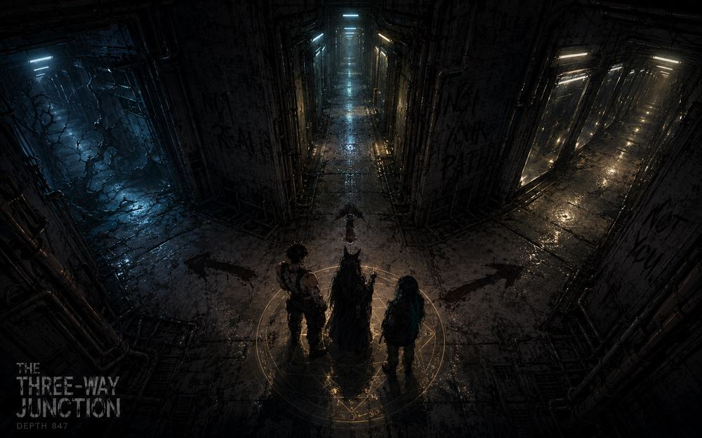
three-way junction. left corridor has music. right corridor has mirrors. center corridor the lights are a different color. the entity is at signal 2. it's waiting.
waiting for what
for us to choose. whichever one we don't pick closes.
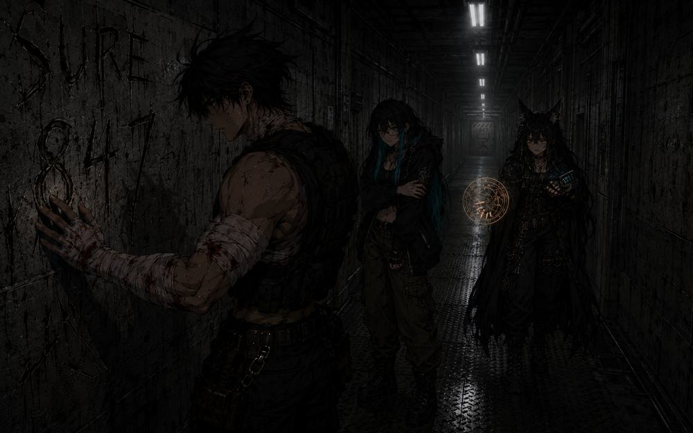
the walls had been written on. not with paint. with something that came from inside the concrete itself, like the building was bleeding words.
SURE. 847. the ward that watches back. all written by different hands. all written at different times. all still wet.
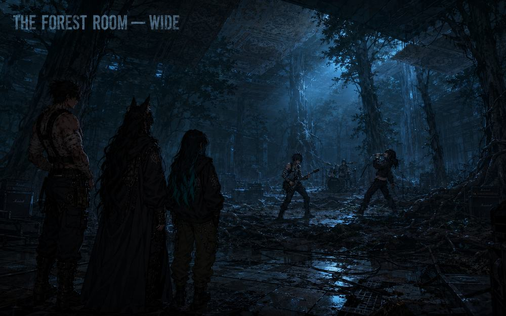
there's a room where trees grew through the floor. there's a band playing in the clearing. they don't see us. the drummer hasn't blinked since we walked in.
i know that song. that's aiden. we sleep forever. i had that on my myspace in 2007. why is my myspace in the backrooms.
the backrooms don't create. they excavate. they dig up what you buried and build hallways out of it.
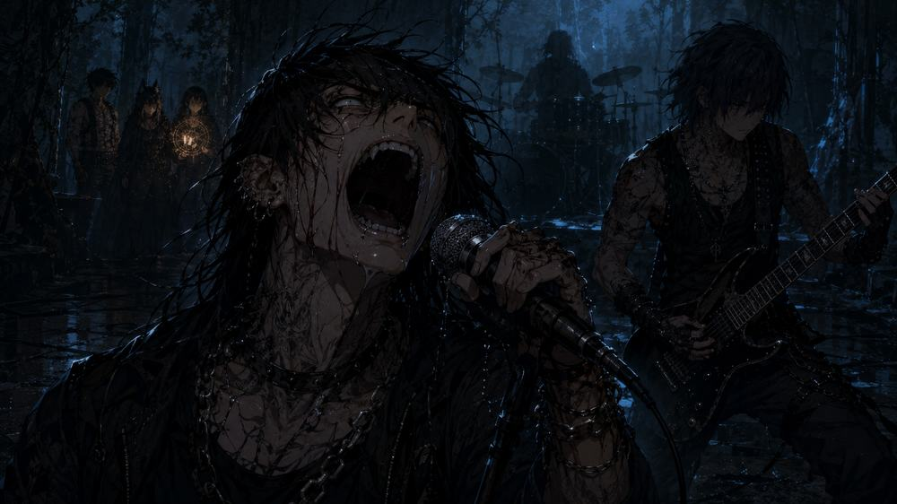
the vocalist had been screaming since 2007. his microphone was connected to the radio network. every transmission on 89.6 FM had this song playing underneath it at very low volume.
nobody had ever turned the volume up enough to notice.
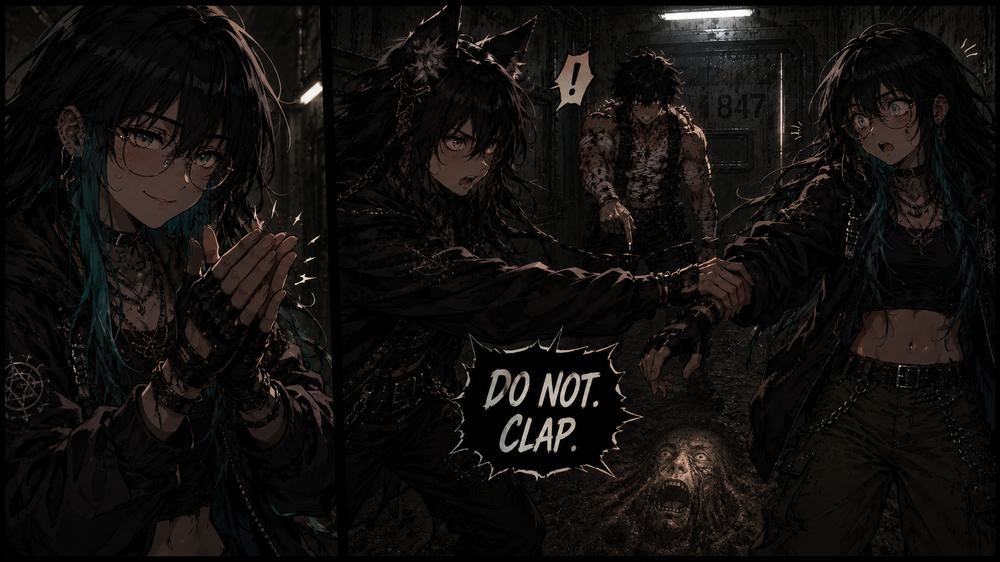
i want to clap. the song is really good. can i clap
DO NOT. CLAP.
because the last person who applauded is the carpet you're standing on.
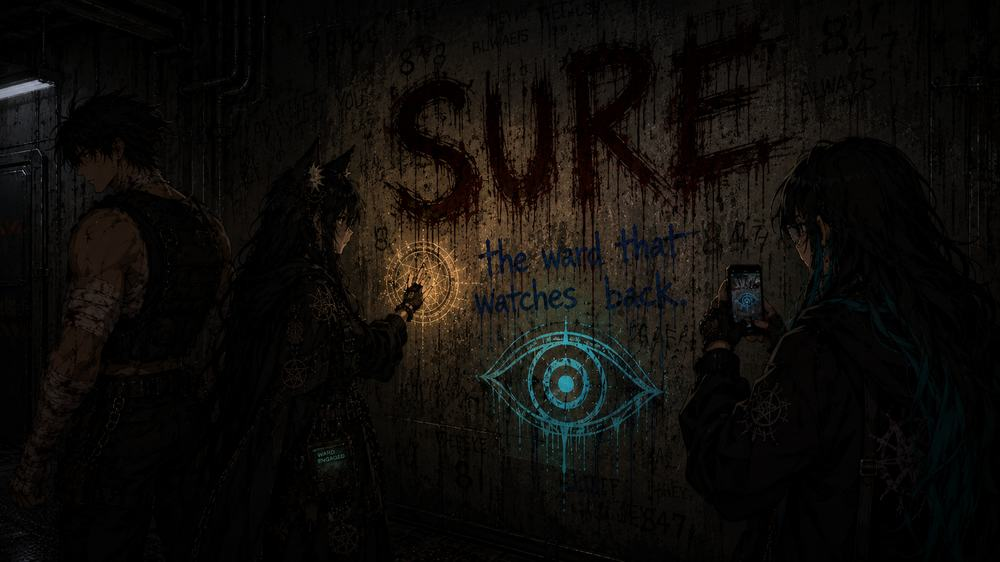
SURE. written in something dark and red. the evil eye beneath it in cyan. "the ward that watches back" in blue. margaret photographed it. monk deliberately didn't look.
the words that don't mean anything are always the ones written largest.
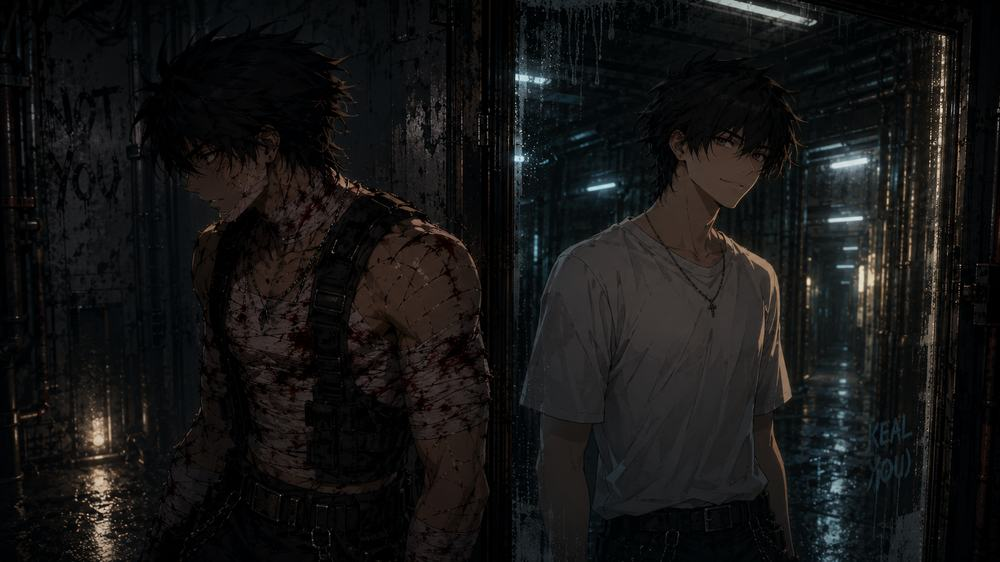
my reflection isn't bleeding. he looks rested. like a version of me that didn't go to thailand. that didn't go to prison. that said no when he should have said no. i don't like looking at him. he looks relieved.
the reflection hadn't turned away yet. the real monk had.
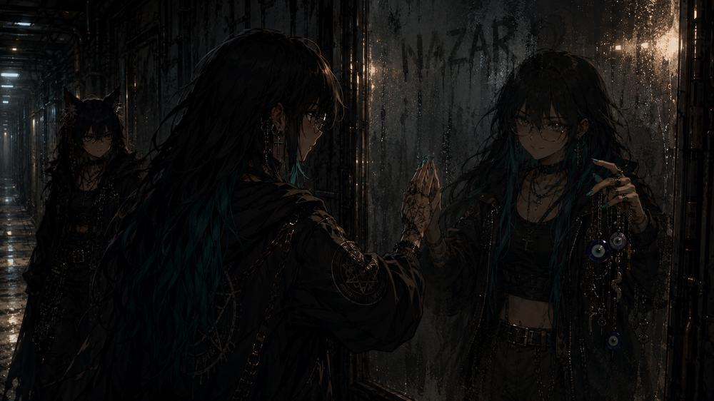
my reflection is holding evil eye charms. i've never owned evil eye charms. why does she look like she knows something i don't.
that's not your reflection. that's nazar. she's been watching since we entered. the ward that watches back isn't a ward on a page. it's a girl in a mirror who hasn't been born into this story yet.
NAZAR was scratched into the wall above the glass. the girl on the other side held up the charms and her mouth moved and through the glass they could almost hear it:
do you have any idea what these are
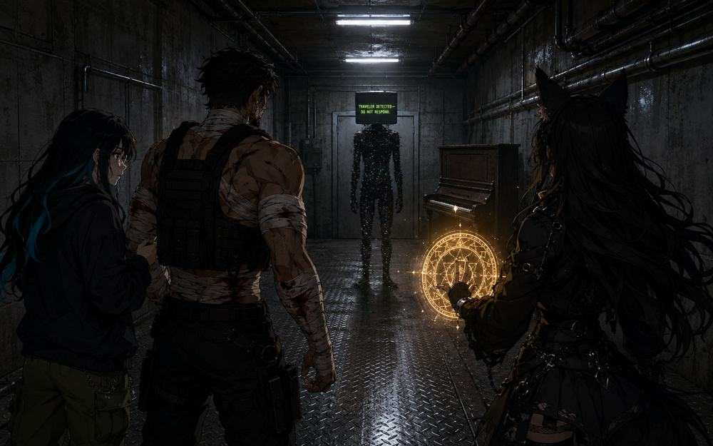
there's a piano. one note playing. B flat. the entity is at the end of the corridor. it doesn't have a face. it has a screen. and the screen says TRAVELER DETECTED — DO NOT RESPOND.
every room is a choice and also a result.
they chose left at the junction. they chose not to clap. they chose to keep walking past the word SURE. every choice brought them here. to the thing that was waiting for them to arrive at the only place all three corridors lead.
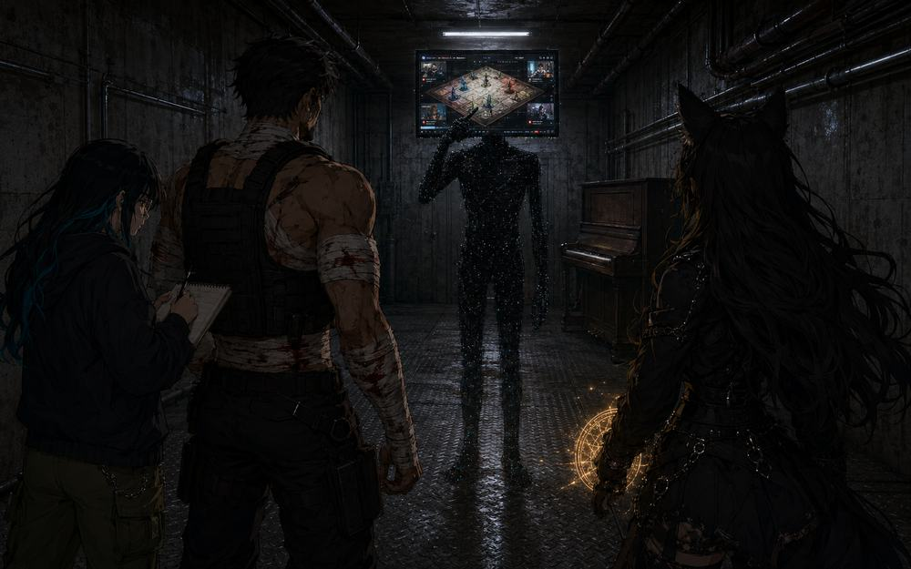
it's not hunting us. it's showing us something. the screen changed. it's showing a board game. six players. youtube videos playing when they land on spaces. the entity isn't the danger. the entity is the CLIENT. it wants the game built.
margaret was writing. she hadn't stopped writing since the mirrors. her notebook was filling with diagrams nobody asked for and rules nobody wrote. the entity pointed at its own face and the board game rotated on the screen like a pitch deck from something that has never needed to pitch before.
it's been waiting for someone to build it a game since hallway 847 was created. and nobody has finished it yet.
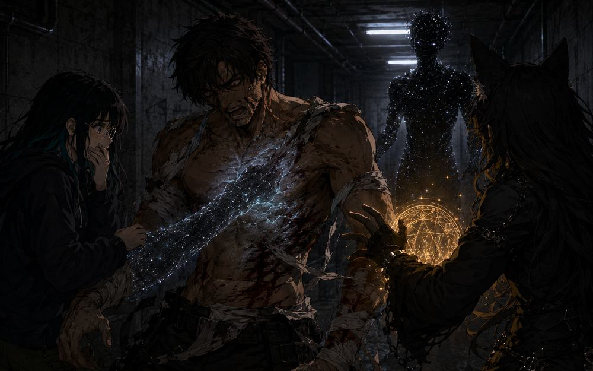
it reached out and its hand went through me and i felt cold and then warm and then nothing and then everything. my stitches closed. all of them. the bleeding stopped.
THIS is how monk got severely injured. not by the entity hurting him. by the entity HEALING him. the stitches from thailand closed but new ones opened. the original wounds. the ones from before. the entity healed the surface and exposed what was underneath.
margaret covered her mouth. not because of the blood. because of what was under the blood. monk had been bleeding from thailand for so long that nobody — not even monk — remembered what was underneath. the entity remembered. the entity found the first wound and opened it like a letter that had never been read.
healing someone all the way down is the most violent thing you can do to a person who built themselves on top of what they buried.
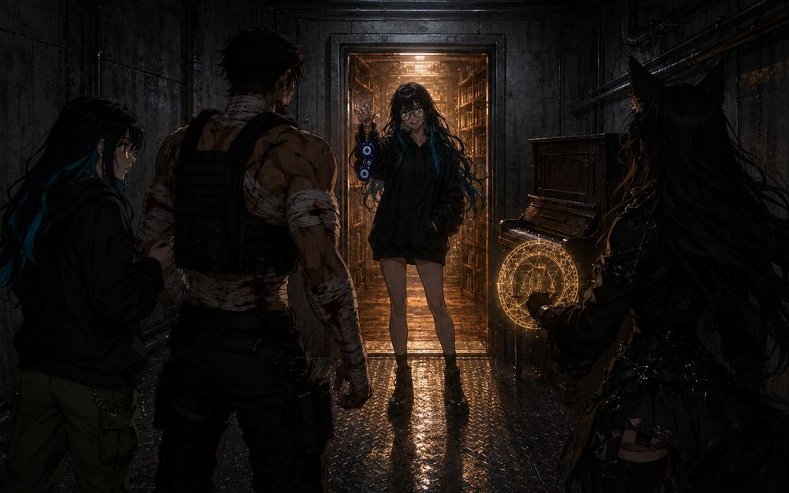
the door with no handle opened from the inside.
she was standing there. black hoodie. glasses. cyan in her hair. evil eye charms dangling from her raised hand. behind her: golden light. bookshelves. warmth. the opposite of everything they'd walked through.
do you have any idea what these are
the door closed. they were on the surface. the piano stopped. the entity was gone. the B flat hung in the air for three more seconds and then it was just wind.
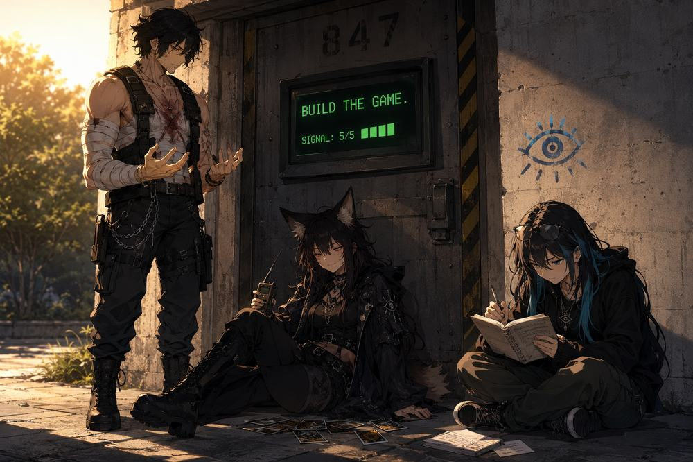
sable-3 extracted. all three alive. monk's thailand wounds are healed but he's bleeding from somewhere older. margaret has a notebook full of things she won't show anyone. the entity wants the board game built. it's not a threat. it's a commission.
the door read BUILD THE GAME. signal 5/5. someone had drawn an evil eye in blue chalk on the wall beside it. nobody drew it.
monk looked at his hands. the bandages were gone. the old wounds were visible. he was seeing them for the first time because for the first time nothing new was covering them up.
margaret wrote and wrote and wrote.
heda foxy held the radio and smiled and said nothing.
the deadline isn't foxy's. it's the backrooms'.
SABLE-3 MISSION LOG · DEPTH 847 · ALL OPERATIVES RETURNED
briefing · sure · duke nukem · the hallway · surface